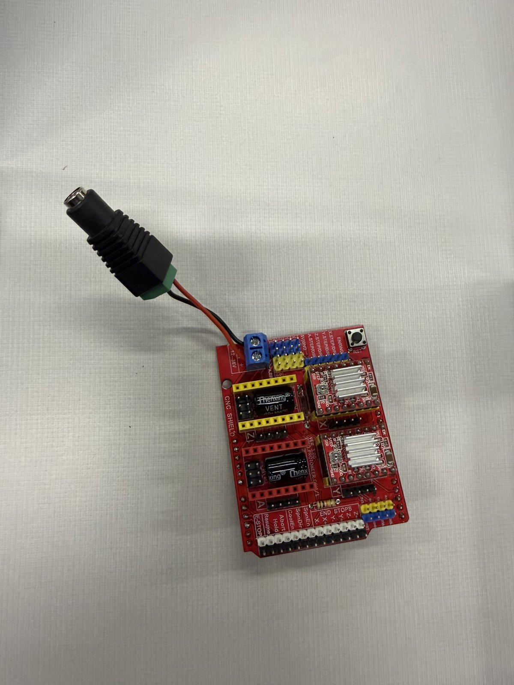
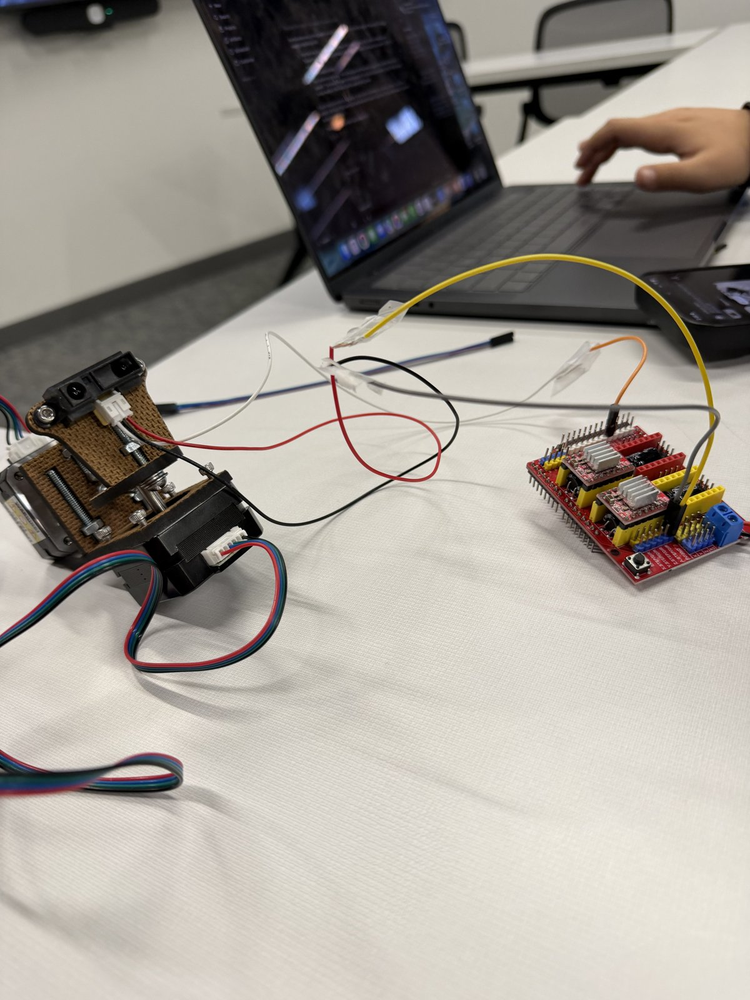
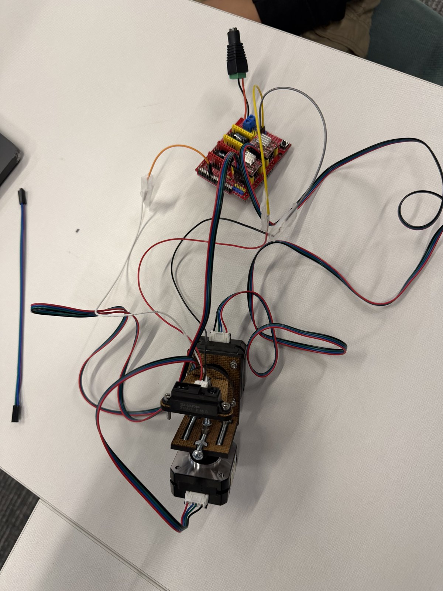
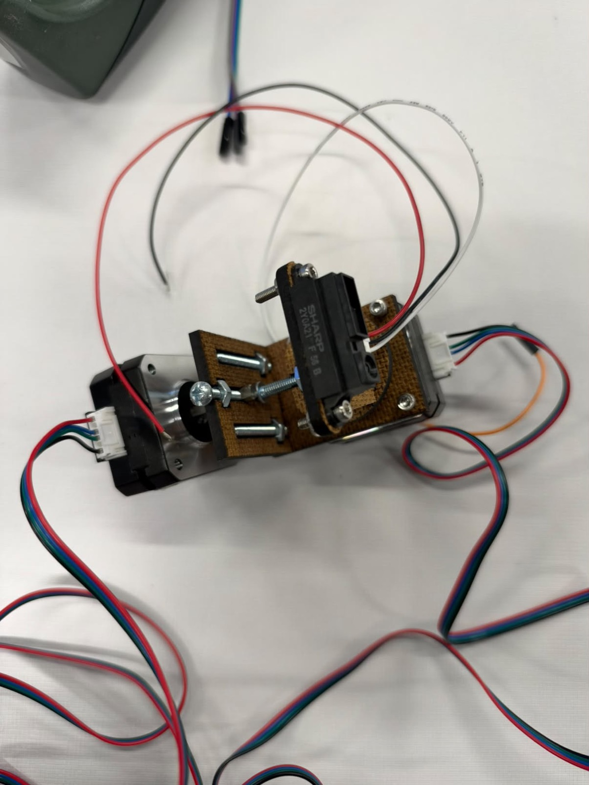
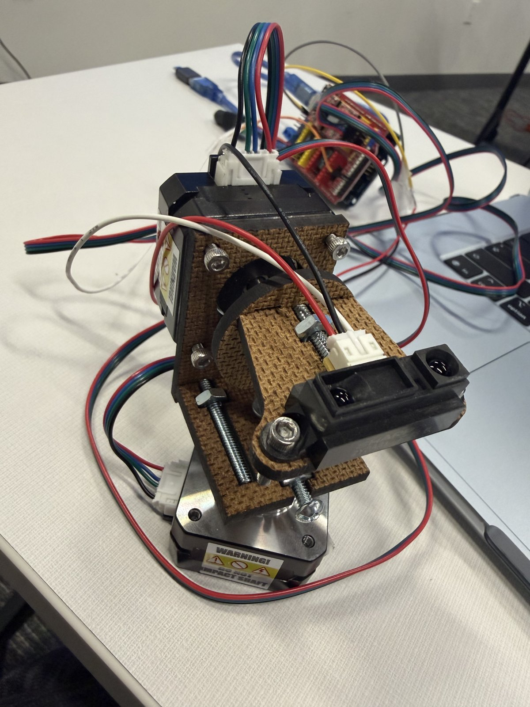
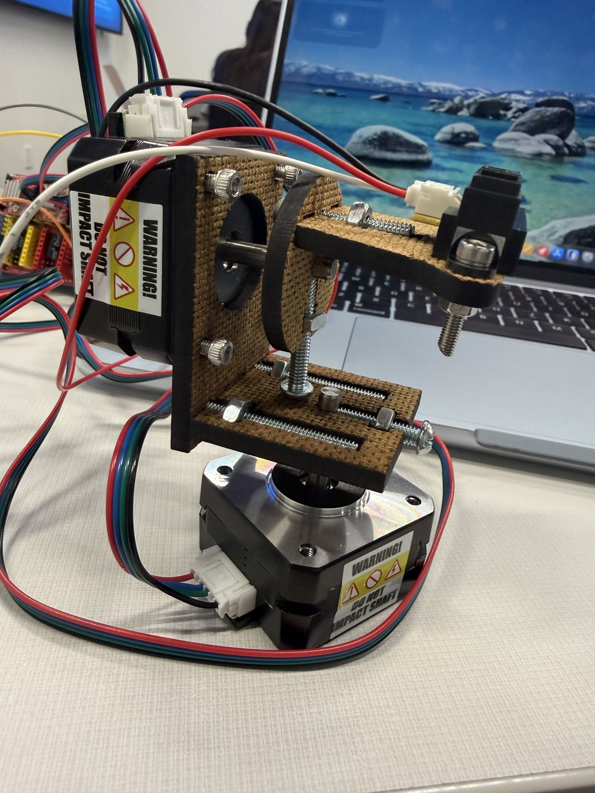
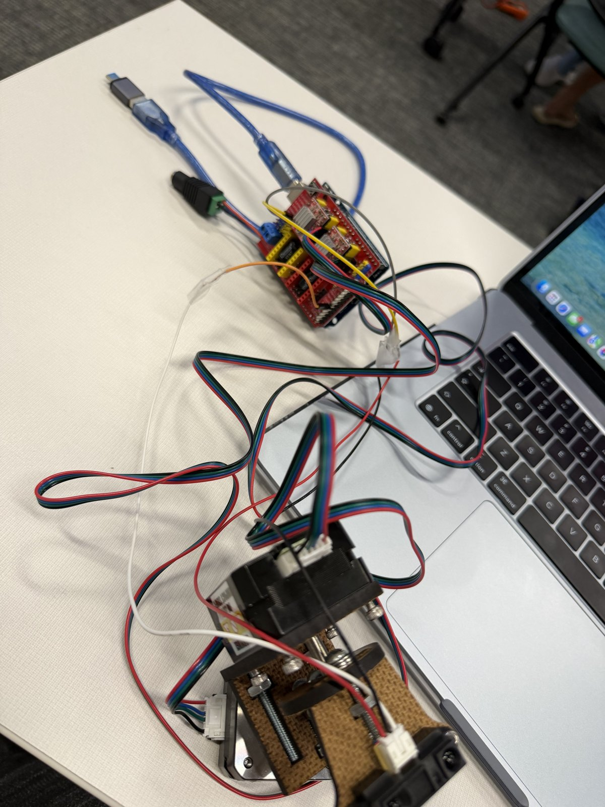

Innovator Journal · November 11, 2026
Reviving Kaydon’s Device
Progress on our sensor and motor assembly: the early setup, a working sensor test, and our latest wiring and movement demonstration.
Our starting point
We have been working on reviving Kaydon’s device project from last year. Instead of starting with a completely new design, we are trying to get the existing assembly working and improve its setup. I am documenting our progress with Kaydon and Ryan through photos and two videos.
So far, we have demonstrated the sensor running and progressed to a setup that can turn, rotate, and hold its position without falling during our test. The project is still in progress, especially when it comes to understanding its full range of movement and detection.
Stage 1 · Board and setup
A different board for the project
Photo 1 shows the new red board assembly we are using for the Arduino setup, rather than the familiar blue board. Recording the board is useful because another person rebuilding the project would need to identify the actual hardware, not just assume it is the same as our earlier projects. I still need to confirm the exact board and attached module models.


Stage 2 · First revival attempts
Initial wiring and a working sensor
Photos 2 and 3 document our first attempts to revive the device. They show the board, connecting wires, motor assembly, and laptop arranged on the table. Photo 4 gives a closer view of the sensor mounted on the wooden bracket and the wires leading away from the assembly.





Video 1 belongs with photos 2–4. It records the sensor test, including the computer output and a hand placed near the sensor. This was an important milestone because it showed that the sensing part of the device was running.
Stage 3 · Current progress
New wiring and an upright assembly
Photos 5–7 show the newer wiring and setup, which is how far we have gotten so far. The front and side views record how the sensor, wooden brackets, and motors fit together. The wider view shows the device connected to the red board near the laptop.





Video 2 belongs with photos 5–7. It documents our movement and support test: the device can turn, rotate, and hold its position without falling in the demonstrated setup. The assembly is also handled during the demonstration, so this is not a measurement of unrestricted or fully autonomous movement.
Setup details and what I still need to record
The photos preserve the physical arrangement: a sensor mounted on a wooden bracket, a motor at the base, another motor higher in the assembly, the red board assembly, and connecting cables. They give us a visual reference for comparing the early and current setups.
I do not have the detailed debugging information yet. I need to ask Kaydon and Ryan for the code, exact connections, and the specific changes that solved each issue. The photos alone are not a complete wiring diagram.
To make this useful for someone trying to reproduce our setup, I need to add:
- The exact board, sensor, motor, and driver models.
- A labeled wiring diagram with pin numbers and power connections, plus the battery or power-supply specifications.
- The current working code and the steps for uploading and starting it.
- A troubleshooting record showing the symptom, what we tested, what we changed, and what happened afterward.
My reflection on troubleshooting
I feel that we have had good success with troubleshooting. Almost every class, we run into a new issue, but by the end of the class we are usually able to figure it out and solve it. The problems are typically an error in the code or a motor or battery that is dead or not working.
This has made me think about the device as a combination of code, power, wiring, and moving parts. If it does not respond, the cause is not necessarily the program. A power or motor problem can also prevent the movement we expect. I want to get better at recording how we distinguish between those possibilities, instead of only recording that the device works again.
For this entry, I can describe our overall troubleshooting experience, but I cannot yet give an exact error message or step-by-step account of an individual repair. Asking Kaydon and Ryan for those details is the next step in making our documentation more specific.
My reflection on the design
I feel that the design is solid, but its freedom of motion might be limited when it comes to turning all the way around through 360 degrees. The current demonstration shows movement, but we still need to find out how far it can turn reliably.
It is also limited vertically: it can only detect a target up to a certain height, or Y position. I have not measured that limit yet. I want to understand whether the limitation comes from the sensor’s view, its mounting, the movement of the assembly, or the code before deciding what to change.
Reviving an earlier project has shown me that progress is not just adding new features. Getting the sensor running, changing the setup, and making the assembly support itself are meaningful steps. The next challenge is to turn those successes into clear, repeatable tests.
My next steps
- Recover the technical details. Ask Kaydon and Ryan for the working code, wiring information, and examples of the issues we solved.
- Document one complete troubleshooting cycle. At the next issue, record the starting symptom, one change at a time, and the result of repeating the test.
- Measure turning and vertical detection limits. Record the reliable turning range and test a target at several measured heights and distances, noting where detection stops.
- Update the setup record. Label the components and connections so the photos can support a reproducible setup guide.